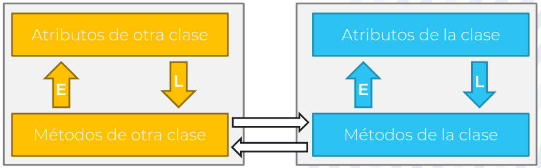
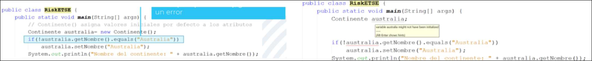

POO · curso 2
1. Encapsulación
Escrito por Adrián Quiroga Linares. adrianql5
1.1 Tipos de datos
Los tipos de datos disponibles en un lenguaje de programación limitan enormemente la posibilidades a la hora de crear programas si no es posible representar un tipo de datos concreto, no se podrá operar sobre ellos. El problema de C se produce cuando intentamos definir nuevos tipos de datos, su integridad es limitada, no podemos restringir el valor que toman las variables en distintas funciones del programa.
1.1.1 Encapsulación
La encapsulación es una de las principales características de la programación orientada a objetos, puesto que asegura la integridad de los datos, limitando las porciones de código del programa que pueden acceder a determinados datos.
Hace uso del principio de ocultación, dónde sólo un trozo de código puede ver un conjunto de datos dado.
1.2 Clases
En POO los tipos de datos se conceptualizan como clases y sus valores concretos se denominan objetos. Por ejemplo Asia sería un objeto que pertenece a la clase Continente.
1.2.1 Clases en Java
En Java tenemos estos tipos de datos:
- Tipos de datos primitivos: vinculados a la representación de los datos en el ordenador, como los de
C. - Clases: vinculadas a las entidades de alto nivel del programa y no se pueden representar de forma directa en el ordenador.
1.2.2 Encapsulación en las Clases
Las clases contienen dos tipos de código:
- Variables o Atributos: que son las características que definen a la entidad representada por cada clase
- Funciones o Métodos: que acceden a los atributos para permitir su lectura y escritura, y para proporcionar la funcionalidad requerida en el programa.
Para resolver el problema de integridad de los datos, las únicas funciones que pueden acceder a los atributos, tanto para leerlos como para escribir sobre ellos, son las funciones de la clase.

Tenemos cuatro tipos de acceso, que se pueden tanto aplicar a los atributos como a métodos.
-
Público (public): cualquier método de cualquier clase del programa puede acceder a los atributos y métodos.
-
Privado (private): sólo métodos de la misma clase pueden acceder a los atributos
-
Acceso a paquete (no tiene especificador): pueden acceder métodos de las clases que pertenezcan al mismo paquete (carpeta).
-
Acceso protegido (protected): pueden acceder métodos de todas las clases que pertenezcan al mismo paquete y también subclases de la clase (aunque no estén en el mismo paquete)..
[!Buenas Prácticas]
- Los atributos de una clase deben ser siempre privados, para que no puedan ser modificados de forma incorrecta, y los métodos deben ser públicos, para poder acceder a los atributos de las clases.
- Se pueden usar métodos privados para facilitar la codificación de otros métodos.
1.2.3 Estructura de una Clase
Getters y Setters
Los getters son métodos que devuelven el valor que tienen los atributos en cada momento de la invocación:
- Sólo hay un único getter para cada atributo:
get nombreAtributo- Por normal general contienen sólo código asociado a la devolución del atributo
Los setters son métodos que escriben el valor que tienen los atributos:
- Sólo hay un único setter para cada atributo
set nombreAtributo- Normalmente contienen código sobre las condiciones que debe cumplir el argumento para que sea un valor correcto del atributo.
[! Buenas Prácticas]
- Los setters siempre deben incluir una condición para evitar la escritura de null como valor de los atributos.
- Normalmente, todos los atributos deben tener getters y setters, salvo que solamente sean usados como parte de programación de los métodos de la clase.
Constructores
Al declarar un atributo de una clase, si este es un tipo de dato primitivo, se reservará memoria para él y se le asignará un valor inicial. Sin embargo, si es una clase, no se reservará memoria (ya que se desconoce cuánto ocupará) y se le asignará el valor inicial null.
Si se intentase usar el atributo en este estado, se generaría un error de ejecución NullPointerExecption. Se debe reservar memoria para él invocando a los constructores con el operador new.
Al declarar una instancia de una clase, no se reservará memoria para dicho objeto tampoco. Si no se inicializa con el operador new, provocará un error de compilación.

Un constructor es un método que no devuelve ningún tipo de dato. Se invoca para:
- Reservar memoria para un objeto y sus atributos.
- Asignar valores iniciales a sus atributos
Su nombre coincide con el nombre de la clase a la que pertenece.
Se invoca una única vez para cada objeto porque cuando se reserva memoria para un objeto, su nombre es una referencia a la posición de memoria donde se almacenan los datos. Si se volviese a invocar al constructor, la referencia apuntaría a una nueva posición y se perdería la anterior.
Constructor por defecto:
- Java proporciona automáticamente este constructor cuando no se especifica ningún otro.
- No tiene ningún argumento
- Inicializa los atributos a sus valores por defecto, es decir, todos los atributos de tipo clase tomarán el valor
null
[!Buenas Pŕacticas]
- Se debe evitar el constructor por defecto
- Los constructores creados deben tener como argumentos los valores de los atributos que es obligatorio inicializar para crear un objeto.
- Se pueden meter comprobaciones en el constructor
Métodos Funcionales
Los métodos funcionales son aquellos que utilizan los atributos de una clase para poder realizar las operaciones que implementan la funcionalidad de esta.
objeto.método()es la forma de invocarlos
Métodos sobrecargados
- Decimos que un método funcional (o un constructor) de una clase está sobrecargado si tiene varias implementaciones.
- Todas las implementaciones deben tener el mismo nombre
- Todas las implementaciones deben tener el mismo objetivo
- Los argumentos deben ser distintos (si no, el compilador no podría distinguir cuál se está invocado y daría un fallo de compilación)
Método toString
toStringes un método que devuelve la representación en texto de un objeto de una clase- Las clases heredan este método de la clase Object, la superior en la jerarquía de clases. Esta implementación es muy genérica y no aporta información sobre el contenido del objeto.
- Por ello, se recomienda reimplementarlo usando el operador
@Overridede manera que devuelva una representación en texto que resuma adecuadamente el contenido del objeto
[!Buenas Prácticas] Se desaconseja el uso de condiciones sobre los argumentos d eun método para seleccionar qué codigo se debe ejecutar en cada caso. Es mejor crear distintas implementaciones del método.
1. 3 Registros
Un registro es una clase cuyas instancias son inmutables, es decir, los valores de los atributos no pueden cambiar en tiempo de ejecución. Todos sus atributos son privados y contienen su correspondiente getter. No tienen setters y no puede existir ningún método que modifique sus valores.
Se pueden introducir nuevos métodos siempre que no alteren los valores de los atributos. Además tienen un constructor canónico con sus correspondiente argumentos para cada uno de los atributos.
- Se puede reimplementar especificando todos los argumentos o usando una declaración compacta.
- Se puede introducir sobrecargas siempre que en su cuerpo se invoque al constructor canónico del registro
El método toString incluye el nombre de la clase y el nombre de los atributos con sus correspondientes valores.
public record Continente(ArrayList<Pais> paises,
String nombre,
String color) {
// Reimplementar constructor canónico: forma compacta
public Continente {
Objects.requireNonNull(paises);
Objects.requireNonNull(nombre);
Objects.requireNonNull(color);
}
// Nuevo constructor (debe invocar al canónico)
public Continente(ArrayList<Pais> paises, String nombre) {
this(paises, nombre, "Blanco");
}
// Método funcional: no puede escribir sobre los atributos
public boolean esGrande() {
if (paises.size() > 10) return true;
return false;
}
}
Nota
No confundir con public final class Contienente{}; esto solamente sirve para que no se pueda extender la clase y ya se verá más adelante.
1. 4 Ejecución de un programa en Java
Todo programa en Java tiene una clase principal en la que se encuentra el método main, que será el punto a partir del cual se inicia la ejecución del programa.
public static void main (String[] args)
La clase principal no debe tener ningún atributo.
public class RiskETSE{
public static void main(String[] args){
new Menu();
}
}
La clase Menú analiza los comandos que introduce el usuario y genera los objetos que invocarán los métodos con los que se da respuesta a las funcionalidad del programa